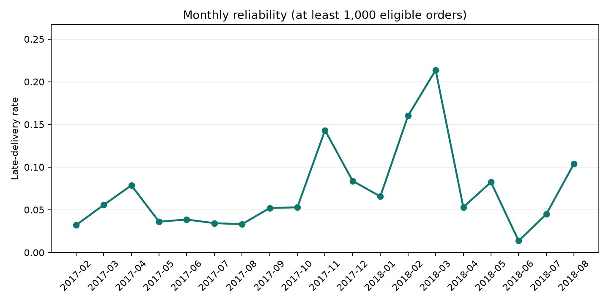
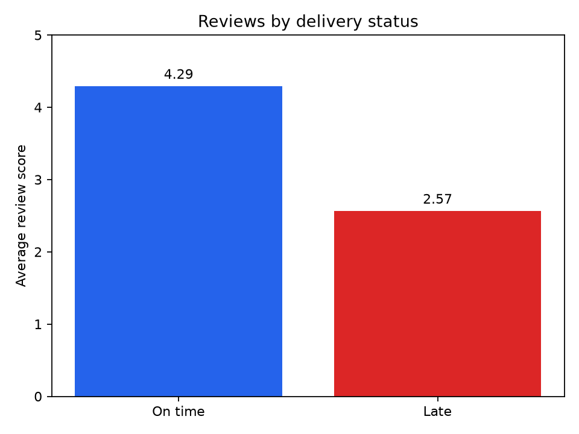
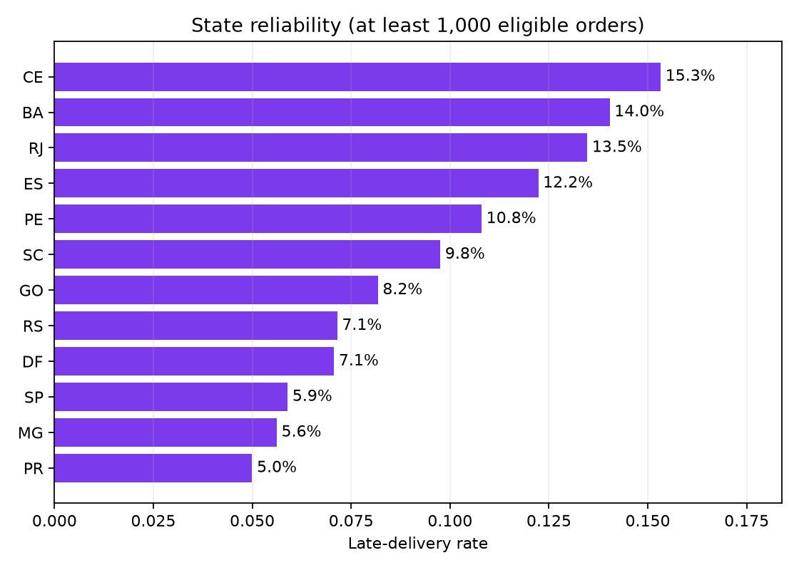

Source: Olist Brazilian E-Commerce Public Dataset (Kaggle, CC-BY-NC-SA-4.0). Purchase coverage: 2016-09-04 to 2018-10-17. Generated: 2026-07-15 10:59 UTC.
These are descriptive associations from a historical snapshot, not causal or realized-revenue claims.
| Orders in warehouse | 99,441 |
|---|---|
| Orders eligible for late-delivery rate | 96,476 |
| Gross item + freight value | 15,843,553.24 |
| Late-delivery rate (eligible orders) | 8.1% |
| Average review score | 4.087 |
| Average delivery days | 12.497 |



States shown have at least 1,000 eligible orders; the table is ordered by order volume.
| State | Eligible orders | Late-delivery rate | Average review | Average delivery days |
|---|---|---|---|---|
| SP | 40,495 | 5.9% | 4.247 | 8.70 |
| RJ | 12,353 | 13.5% | 3.964 | 15.24 |
| MG | 11,355 | 5.6% | 4.192 | 11.95 |
| RS | 5,344 | 7.1% | 4.186 | 15.25 |
| PR | 4,923 | 5.0% | 4.240 | 11.94 |
| SC | 3,547 | 9.8% | 4.132 | 14.91 |
| BA | 3,256 | 14.0% | 3.930 | 19.28 |
| DF | 2,080 | 7.1% | 4.134 | 12.90 |
| ES | 1,995 | 12.2% | 4.080 | 15.72 |
| GO | 1,957 | 8.2% | 4.104 | 15.54 |
| PE | 1,593 | 10.8% | 4.083 | 18.40 |
| CE | 1,279 | 15.3% | 3.942 | 21.20 |
Highest late-delivery rates among sellers with at least 100 eligible orders. Truncated IDs remain dataset identifiers, not business names.
| Seller ID | Eligible orders | Late-delivery rate | Average review |
|---|---|---|---|
| 06a2c3af... | 389 | 23.1% | 4.013 |
| 1ca7077d... | 108 | 22.2% | 2.393 |
| 88460e8e... | 246 | 19.5% | 3.443 |
| e5a34388... | 216 | 18.5% | 3.995 |
| cd68562d... | 122 | 18.0% | 4.017 |
The late-delivery denominator includes only orders with both actual and estimated delivery timestamps. SQL definitions are versioned in analysis.sql; interpretation and limitations are documented in docs/ANALYSIS.md.
python -m commercelens.cli report --data-dir data/raw --db-path reports/commercelens.duckdb --output-dir site